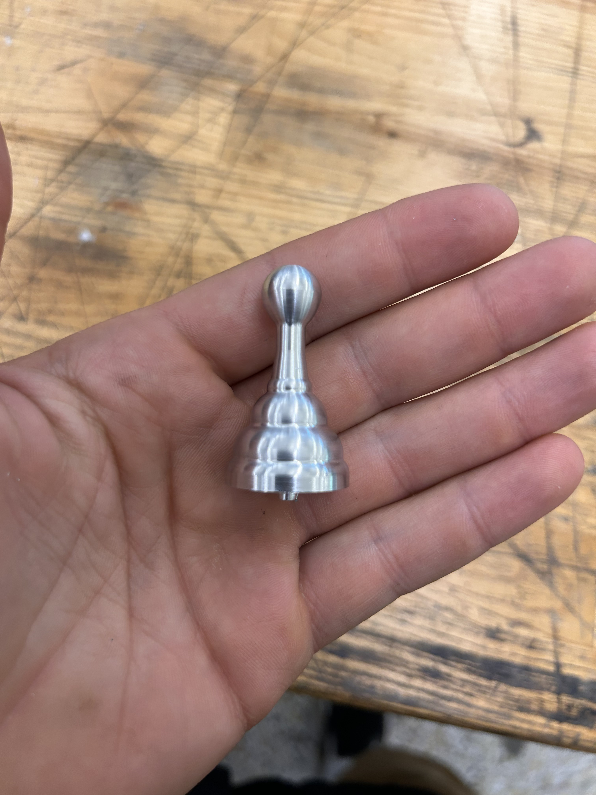

Manufacturing Process Gallery


High-precision CNC machining demonstrating advanced manufacturing techniques and surface finish quality
This precision CNC machining project demonstrates advanced manufacturing capabilities through the creation of a high-quality chess piece. The project emphasizes precision tolerances, surface finish quality, and multi-axis machining techniques while showcasing proficiency with professional CNC equipment and CAM programming.
Working with aluminum stock, this project required careful tool selection, cutting parameter optimization, and precise fixturing to achieve the complex geometries and excellent surface finish visible in the final product. The manufacturing process demonstrates both technical machining skills and attention to aesthetic detail.
Created detailed 3D model and optimized toolpaths using Mastercam, ensuring efficient material removal while maintaining surface quality requirements.
Selected appropriate cutting tools for different operations, including roughing endmills, finishing endmills, and specialized form tools for complex features.
Designed and implemented secure workholding solutions to maintain part stability during multi-operation machining while ensuring access to all features.
Implemented in-process inspection and measurement protocols to verify dimensional accuracy and surface finish throughout the manufacturing process.
Watch the precision CNC machining process, showcasing advanced manufacturing techniques and quality control procedures.
Initial setup procedures and roughing operations to remove bulk material efficiently.
High-precision finishing operations demonstrating surface quality and dimensional accuracy.
Final inspection and measurement procedures ensuring all specifications are met.
Successfully achieved all dimensional tolerances within ±0.005" specification, demonstrating mastery of precision CNC machining techniques.
Achieved excellent surface finish of 32 μin Ra through optimized cutting parameters and proper tool selection, exceeding project requirements.
Optimized machining process for both quality and efficiency, demonstrating understanding of production manufacturing principles.
Created comprehensive process documentation including setup sheets, tool lists, and quality control procedures for repeatability.